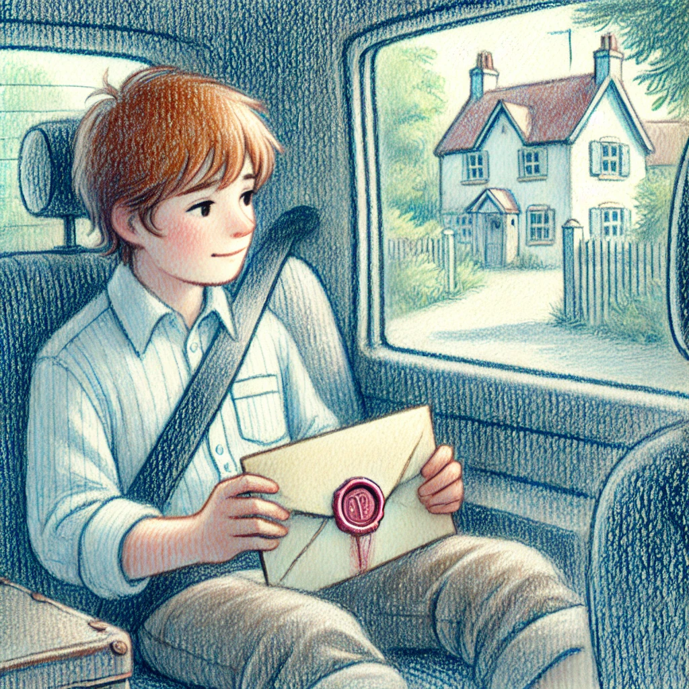

7.Dezember
Der Auserwählte
 Johann starrte den Mann im Weihnachtsmannkostüm durch den Rückspiegel an. Der Bart saß schief, und die rote Mütze war etwas zerknittert. Doch die Augen des Mannes hatten etwas Beruhigendes, vielleicht sogar Vertrautes. Mit einem Räuspern wandte der Nikolaus sich halb zu Johann um und sprach leise, als wolle er nicht, dass jemand draußen es hören konnte:
„Du hast die richtige Entscheidung getroffen, Johann. Ich weiß, das ist alles seltsam, aber ich habe etwas sehr Wichtiges mit dir zu besprechen. Vertrau mir – ich bin hier, um dich zu beschützen.“
Johann atmete tief durch. „Wie wissen Sie, wer ich bin? Und warum sind Sie hier?“ Seine Stimme zitterte, doch gleichzeitig spürte er, wie die Anspannung etwas nachließ.
Der Mann zog das Taxi mit einem sanften Ruck an den Straßenrand. „Dein Onkel Carlos hat mich geschickt. Es geht um deine Familie, Johann. Es gibt Dinge, die du wissen musst – Dinge, die dein Leben betreffen.“
„Carlos?“ Johann dachte an den Brief. Die Worte des Onkels schienen plötzlich in seinem Kopf zu pulsieren: ‘Du kennst mich nicht, aber ich bin dein Onkel Carlos…’
„Woher wissen Sie davon?“ fragte er misstrauisch.
„Es ist eine lange Geschichte, und sie beginnt nicht heute. Aber jetzt ist nicht die Zeit für Fragen, sondern für Entscheidungen. Du musst mir vertrauen. Ich bringe dich an einen sicheren Ort, wo wir alles in Ruhe besprechen können.“
Der Nikolaus startete den Motor wieder und bog in eine Seitenstraße ein, die Johann nicht kannte. Das Taxi schaukelte leicht über das Kopfsteinpflaster, und Johann merkte, wie seine Unsicherheit langsam von Neugier überwältigt wurde.
„Ich brauche Beweise“, sagte er schließlich. „Wie soll ich Ihnen glauben?“
Der Nikolaus griff in die Innentasche seines roten Mantels und zog einen kleinen Umschlag hervor. Johann erkannte sofort das Siegel – das gleiche, das auf dem Brief seines Onkels gewesen war.
„Das ist von Carlos“, erklärte der Mann. „Es ist für dich. Lies es, wenn du bereit bist. Aber ich warne dich, Johann: Sobald du diesen Weg gehst, gibt es kein Zurück.“
Johann saß still, das Leder des Taxis knarzte leicht, während das Auto durch die engen Straßen rollte. Das Gewicht des Umschlags in seinen Händen fühlte sich plötzlich viel bedeutender an, als es sein sollte. Die vertraute Wachssiegelung darauf schien ihn zu rufen.
„Warum gibt mir mein Onkel das nicht persönlich?“ fragte Johann und blickte den Nikolaus forschend an.
Der Mann zögerte. „Dein Onkel... er ist nicht in der Nähe. Aber er hat mir aufgetragen, dir zu helfen. Lies es, Johann. Die Antworten, die du suchst, sind darin.“
Mit zitternden Fingern brach Johann das Siegel. Das Papier war alt und roch leicht nach Tinte. Die Schrift war sorgfältig und stilvoll, aber die Worte schienen vor Eile auf die Seite gedrängt zu sein.
Querido Johann
Si estás leyendo esta carta, Hans, un viejo amigo mío, seguramente te ha encontrado. Sé que esto suena extraño, pero ahora estás atrapado en una red de eventos que comenzó mucho antes de que nacieras. Hay personas que creen que eres una clave. Te ven como la solución para algo mucho más grande de lo que puedes imaginar.
No quiero alarmarte, pero estás en peligro. Las personas que te buscan no son todas amistosas, y no se rendirán. Puedo explicarte más si nos encontramos. Confía en mi amigo; él te llevará hasta mí. Y Johann, recuerda: tu familia quiso protegerte, pero a veces la protección también lleva a los secretos. Perdónalos.
Con esperanza,
Carlos
Johanns Herz klopfte laut in seiner Brust. „Ein Schlüssel? Was soll das heißen?“ murmelte er, fast ohne es zu merken.
„Es bedeutet“, begann der Mann im Weihnachtsmannkostüm, der wohl Hans hiess, „dass du etwas Besonderes bist, Johann. Dein Onkel glaubt, dass du eine wichtige Rolle spielst, vielleicht sogar eine entscheidende. Es geht um mehr, als du jetzt verstehst, aber ich verspreche dir, wir erklären dir alles, wenn wir bei ihm sind.“
Johann fühlte eine Mischung aus Neugier und Angst. Warum sollte er, ein zehnjähriger Junge, so wichtig sein? „Meine Eltern haben mir nie von Onkel Carlos erzählt“, sagte er schließlich.
Der Nikolaus nickte ernst. „Weil sie dich beschützen wollten. Es ist keine einfache Welt, Johann. Dein Onkel wusste das. Deshalb war er lange Zeit still. Aber jetzt... gibt es keine Wahl mehr.“
Das Taxi bog in eine schattige Gasse ein und hielt an. Hans drehte sich zu Johann um, seine Augen unter der Weihnachtsmannmütze blickten ernst. „Wir sind da.“
Was soll Johann tun?
- Johann beschliesst Carlos anzurufen. Was soll das ganze Versteckspiel? Wozu hat er denn das Telefon?
- Johann beschliesst zu fliehen. Er möchte diese Wahrheit lieber doch nicht erfahren. Es hat sicher seinen Sinn gehab, dass man ihm zuvor nichts erzählt hat.
- Johann vertraut Hans. Das Siegel auf dem Brief war echt. Es klingt so, als geschehe alles zu seinem Besten.